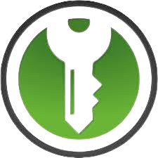

Atelier gestion des mots de passe
WINCKLER Simon
Sommaire
- Introduction
- Risques liés à des mots de passe faibles
- Création de mots de passe solides
- Gestion et stockage des mots de passe
- Authentification à 2 facteurs
Qu'est-ce qu'un mot de passe ?
Code alphanumérique ou phrase, moyen d’authentification, qu’il faut donner pour accéder dans un endroit protégé ou pour utiliser une ressource ou un service dont l’accès est limité et protégé.
Pourquoi les mots de passe sont-ils importants ?
Les mots de passe sont importants car ils servent de première ligne de défense contre les pirates informatiques. Si quelqu'un peut deviner votre mot de passe, il peut accéder à vos informations personnelles.
Risques liés à des mots de passe faibles
Conséquences
- Un mot de passe faible, comme "123456" ou "password," est facilement devinable par des attaquants, ce qui peut entraîner un accès non autorisé à vos comptes en ligne.
- Vous pourriez subir une violation de la vie privée, une usurpation d'identité ou la perte de données précieuses en raison de mots de passe faibles.
- Si vous utilisez le même mot de passe pour plusieurs comptes, un attaquant pourrait compromettre plusieurs de vos comptes en exploitant une seule vulnérabilité. Mon mail a-t-il été corrompu ?
Accès non autorisé
Usurpation d'identité
Propagation de l'attaque
Ce qu'il ne faut pas faire
- "123456", "azerty" et autres "motdepasse" arrivent malheureusement généralement en tête des mots de passe les plus utilisés. Inutile de dire qu'ils n'offrent aucune protection.
- Vulnérable aux attaques dites "dictionnaires".
- Personne ne doit deviner votre mot de passe à partir du nom de votre chien ou de votre film préféré. Idem pour le code de votre smartphone, préférez un nombre aléatoire à une année.
- Pour éviter les piratages en cascade, chacun de vos comptes en ligne doit être verrouillé avec un mot de passe propre et unique.
Eviter les combinaisons façiles
Ne pas utiliser de mots courants.
Il ne doit pas contenir d'informations personnelles.
Utiliser un même mot de passe pour plusieurs comptes.
Ne pas être trop court.
- Plus un mot de passe est court, moins il y a de combinaisons à tester, rendant l'attaque par force brute plus rapide et plus efficace.
| Niveau de sensibilité | Longueur | Taille de clé (en bits) | ||
| Faible à moyen | 9 à 11 | ~65 | ||
| Moyen à fort | 12 à 14 | ~85 | ||
| Fort à très fort | Au moins 15 | > 100 |
Définition d'un "mot de passe fort"
Un bon mot de passe peut contenir, par exemple, au moins 12 caractères et 4 types de caractères différents: des minuscules, des majuscules, des chiffres et des caractères spéciaux.
Création d'un mot de passe fort
- La méthode la plus connue, qui est très efficace, consiste à prendre une phrase assez longue – connu de personne de préférence –, de garder les initiales de chaque mot, et de les combiner en remplaçant des lettres par des chiffres et des symboles Exemple : "un tiens vaut mieux que deux tu l’auras" donnera 1tvmQ2tl’A Pour s'aider
- De la même façon, en utilisant des équivalents phonétiques, la phrase "j'ai acheté huit cd pour cent euros cet après-midi " devient facilement Ght8CD%€7am.
- Une phrase secrète offrant un niveau de sécurité élevé est un ensemble de mots, préférablement dénué de sens, mais qu'il est possible de retenir de façon mnémotechnique, regroupant des lettres et des chiffres. Exemple : « Ceci est ma phrase de passe » devient C3ci 3st m4 phr4s3 d3 p4ss3 Tester mon mot de passe
La méthode de la première lettre
La méthode phonétique
Utiliser une phrase de passe
Gestion et Stockage des Mots de Passe
A ne pas faire
- Si vous écrivez vos mots de passe sur du papier ou autre support, quelqu'un pourrait les trouver et les utiliser pour accéder à vos comptes. Demandez à TV5Monde ...
- Les navigateurs ne sont généralement pas conçus pour stocker les mots de passe. Les informations de connexion stockées peuvent être plus faciles à accéder pour certains types d'attaques, surtout si votre ordinateur est compromis.
- La compromission d'un seul compte peut entraîner la compromission de tous les autres comptes liés à ce mot de passe.
- La réutilisation facilite la propagation rapide des attaques
Le noter sur un post-it, carnet, téléphone ...
Sauvegarder sur son navigateur
Le ré-utiliser
Comment faire alors ?
Les retenir sans les écrire ... en travaillant vos neurones
... en utilisant un gestionnaire de mots de passe
Utiliser un gestionnaire de mots de passe pour stocker vos mots de passe en toute sécurité. Vous n’aurez à retenir qu’un mot de passe pour accéder à l’ensemble de vos comptes !
Gestionnaire de mots de passe
Il s'agit d'une solution numérique avec laquelle on peut gérer ses mots de passe en centralisant l'ensemble de ses identifiants et mots de passe dans une base de données. Le gestionnaire de mots de passe est protégé par un mot de passe unique, afin de n'en avoir plus qu'un seul à retenir.
Choisir un gestionnaire de mots de passe
KeepassXC
- Stocker vos identifiants (nom d'utilisateur et mots de passe) de vos applications et sites favoris
- Organiser votre base d'identifiants par groupe et sous-groupes
- Importer des données à partir d'une autre source (un fichier CSV, un autre gestionnaire de mots de passe, etc.)
- Générer des mots de passe complexe
- Stocker des clés de licences, des numéros de cartes bancaires, et même des fichiers
- Associer des tags à vos identifiants pour les retrouver plus facilement, autrement que par les groupes
Fonctionnalités
Installation
- Depuis la logithèque : KeepassXC
- Télécharger KeePassXC
- Lancer KeepassXC et à l'ouverture cliquer sur "Créer une nouvelle base de données".
- Donner un nom à la base de données.
- Laisser le chiffrement par défaut de la base de données.
- Ensuite, vous devez définir un mot de passe maître : il s'agit du mot de passe qui sert à ouvrir votre base KeePass. Autrement dit, c'est la clé du coffre-fort ! C'est le SEUL mot de passe que vous devez retenir et il doit être complexe.
- Sélectionner ensuite un emplacement pour le fichier. L'idéal est de le mettre sur un cloud, type Murena.
- Voilà, la base de données est prête !
Linux
Windows
Premiers pas

- Titre : nom de l'identifiant
- Nom d'utilisateur : nom d'utilisateur à ce compte
- Mot de passe : mot de passe de ce compte Lorsque les identifiants sont liés à une page Web, je vous recommande de remplir le champ "Adresse (URL)" afin de bénéficier du remplissage automatique dans le navigateur.
A minima, je vous recommande de renseigner les champs suivants :
Intégration au(x) navigateur(s)
KeePassXC dispose d'extensions officielles pour les navigateurs, ce qui permet au navigateur de lire les informations d'une base et de remplir automatiquement les formulaires de connexion : c'est très pratique. Pour effectuer la correspondance, KeePassXC s'appuie sur l'URL renseignée dans les entrées. Si l'on se connecte sur un site avec des identifiants qui ne sont pas dans la base KeePass, l'extension va proposer de créer une nouvelle entrée. Si les informations saisies sont différentes vis-à-vis de la base, l'extension proposera de mettre à jour l'entrée existante.
- Pour utiliser cette fonctionnalité, cliquer sur "Outils" -> "Paramètres"
- Cliquez sur "Intégration aux navigateurs" à gauche, puis cochez l'option "Activer l'intégration aux navigateurs". Ensuite, vous devez activer l'intégration pour un ou plusieurs navigateurs, selon ceux que vous utilisez : cochez les cases correspondantes, et validez avec "OK". Mais, avant cela utilisez les liens (en vert) pour être redirigé.e vers la page de l'extension afin d'installer l'extension.
Exemple sous Firefox
- Il faut cliquer sur "Ajouter à Firefox", valider l'ajout et choisir de pouvoir l'exécuter ou non en navigation privée.
- Pour terminer la connexion, il faut cliquer sur la nouvelle extension ajoutée.
- Donner un nom au navigateur de la machine.
- C'est terminé, vous pouvez maintenant utiliser votre base de données depuis le navigateur!
Remplissage auto grâce au navigateur
Vous savez maintenant utiliser KeepassXC !
Pour aller plus loin ...
L'authentification à 2 facteurs/multifacteur
Une authentification multifacteur permet de prouver l’identité d’un utilisateur par la vérification de plusieurs éléments, appelés facteurs d’authentification. Chacun des facteurs d’authentification mis en œuvre doit appartenir à une catégorie de facteur différente. L’absence d’un des facteurs nécessaire à une authentification multifacteur doit faire échouer l’authentification.
Différents types de facteurs d'authentification possibles :
- Facteur de connaissance : « Quelque chose que vous savez », il s’agit d’une connaissance devant être mémorisée telle qu’une phrase de passe, un mot de passe, un code, etc ;
- Facteur de possession : « Quelque chose que vous avez », il s’agit d’un élément secret non mémorisable contenu dans un objet physique qui idéalement protège cet élément de toute extraction, tel qu’une carte à puce, un token, un téléphone (un appareil physique ou un code généré par une application);
- Facteur inhérent : « Quelque chose que vous êtes », il s’agit d’une caractéristique physique intrinsèquement liée à une personne et indissociable de la personne elle-même, telle qu’une caractéristique biologique (ADN), morphologique (empreinte digitale, empreinte rétinienne) ou comporte- mentale 4 (voix, frappe au clavier).
Avantages de l'authentification à deux facteurs (2FA) :
- Renforcement de la sécurité : La 2FA renforce significativement la sécurité en ajoutant une couche supplémentaire d'authentification au-delà du simple mot de passe. Même si un mot de passe est compromis, l'accès au compte nécessite un deuxième facteur d'authentification.
- Protection contre l'accès non autorisé : En exigeant un deuxième facteur, la 2FA rend plus difficile pour les attaquants d'accéder à des comptes en ligne, même s'ils ont réussi à obtenir le mot de passe.
- Réduction du risque de vol d'identité : La 2FA ajoute une barrière supplémentaire pour empêcher le vol d'identité en ligne, car les attaquants auraient besoin d'accéder à la fois au mot de passe et au deuxième facteur d'authentification.
- Prévention des attaques par force brute : La 2FA rend les attaques par force brute plus difficiles, car les attaquants devraient non seulement deviner le mot de passe, mais aussi le deuxième facteur.
- Sécurité pour les accès à distance : La 2FA est particulièrement bénéfique pour les accès à distance, car elle ajoute une couche de protection supplémentaire lorsque les utilisateurs se connectent depuis des endroits différents.